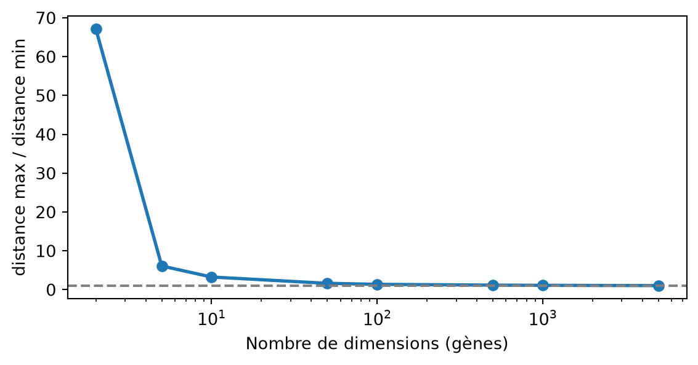
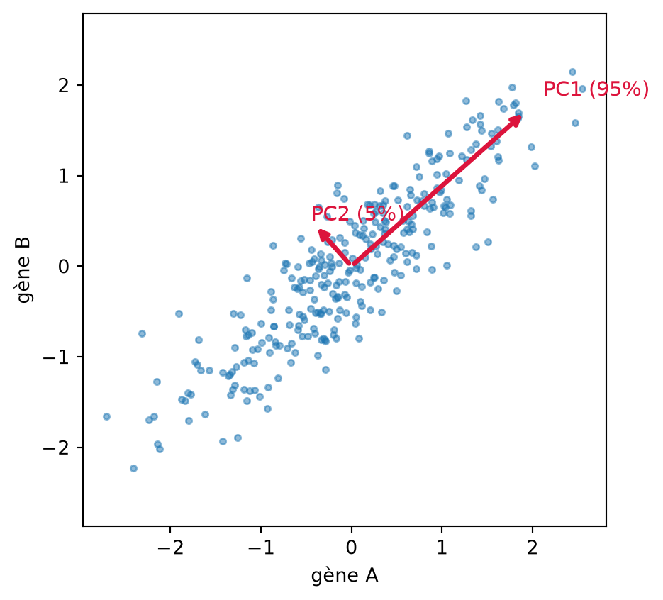
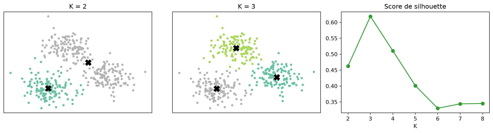

flowchart TB
A["🩸 Échantillon de sang"] --> B["Isolement des cellules"]
B --> C["Séquençage des ARNm"]
C --> D["Matrice cellules × gènes"]
D --> E["QC + normalisation"]
E --> F["ACP puis UMAP"]
F --> G["Clustering (K-Means)"]
G --> H["Types cellulaires"]
Séance 2 : Apprentissage non supervisé et profilage d’expression génique

Notebook de l’atelier — ouvrez-le dans Colab puis Fichier → Enregistrer une copie dans Drive. Version téléchargeable : S2_transcriptomique_clustering.ipynb
1. Le problème biologique
Le RNA-seq mesure, pour chaque échantillon, la quantité d’ARN messager de chaque gène : c’est une photographie de l’activité de la cellule ou du tissu. Deux grandes situations :
- RNA-seq « bulk » : un échantillon = un tissu (ex. une biopsie de tumeur). Regrouper des centaines de patients a permis de découvrir des sous-types moléculaires de cancers (ex. les sous-types luminal A/B, HER2, basal du cancer du sein) qui orientent aujourd’hui le traitement.
- RNA-seq single-cell : un échantillon = une cellule. On peut alors cartographier tous les types cellulaires d’un organe (projet Human Cell Atlas), suivre une réponse cellulaire à un traitement ou repérer une population rare.
Dans les deux cas, on ne connaît pas les groupes à l’avance : c’est un problème d’apprentissage non supervisé. Nous utilisons des cellules mononucléées du sang (PBMC) : lymphocytes T, B, NK, monocytes, cellules dendritiques et quelques plaquettes.
2. Notions théoriques essentielles
2.1 La matrice d’expression
Les données forment une matrice \(\mathbf{X}\) de taille \(n \times p\) : \(n\) = 2 700 cellules (lignes), \(p\) ≈ 33 000 gènes (colonnes). La valeur \(x_{ij}\) est le nombre de molécules d’ARN du gène \(j\) comptées dans la cellule \(i\). Cette matrice est :
- creuse (sparse) : > 95 % de zéros (gènes non exprimés, ou ARN non capturé : dropout) ;
- de très grande dimension : \(p \gg n\), chaque cellule est un point dans un espace à 33 000 axes.
2.2 Contrôle qualité et normalisation
| Indicateur | Problème détecté | Action |
|---|---|---|
| Peu de gènes détectés (< 200) | gouttelette vide, cellule abîmée | retirer |
| Trop de gènes (> 2 500) | doublet (deux cellules capturées ensemble) | retirer |
| % d’ARN mitochondrial élevé (> 5 %) | cellule morte ou stressée (membrane percée : l’ARN cytoplasmique fuit) | retirer |
Chaque cellule est séquencée plus ou moins profondément : on normalise chaque cellule à 10 000 comptages, puis on applique un logarithme pour réduire l’écrasante influence des gènes très exprimés :
\[ \tilde{x}_{ij} = \log\left(1 + 10^4 \cdot \frac{x_{ij}}{\sum_{k} x_{ik}}\right) \]
On ne garde ensuite que les ~2 000 gènes les plus variables (les autres reflètent surtout du bruit), et on centre-réduit chaque gène (moyenne 0, écart-type 1) pour que tous les gènes pèsent pareil.
2.3 La malédiction de la dimension
En très grande dimension, toutes les distances se ressemblent : le plus proche voisin d’un point est presque aussi loin que le plus éloigné. Les algorithmes fondés sur les distances (K-Means, voisins) deviennent alors peu fiables — d’où la nécessité de réduire la dimension d’abord.
Code de la figure
import numpy as np
import matplotlib.pyplot as plt
rng = np.random.default_rng(0)
dims = [2, 5, 10, 50, 100, 500, 1000, 5000]
ratios = []
for d in dims:
pts = rng.random((500, d))
dist = np.linalg.norm(pts[1:] - pts[0], axis=1)
ratios.append(dist.max() / dist.min())
plt.figure(figsize=(6, 3.2))
plt.semilogx(dims, ratios, marker="o", lw=2)
plt.axhline(1, c="grey", ls="--")
plt.xlabel("Nombre de dimensions (gènes)")
plt.ylabel("distance max / distance min")
plt.tight_layout()
plt.show()
2.4 L’Analyse en Composantes Principales (ACP)
L’ACP cherche de nouveaux axes (les composantes principales, PC) qui capturent le maximum de variance. Chaque PC est une combinaison linéaire des gènes :
\[ \text{PC}_1 = w_{1}\,\text{gène}_1 + w_{2}\,\text{gène}_2 + \dots + w_{p}\,\text{gène}_p \]
Mathématiquement, les vecteurs \(\mathbf{w}\) (loadings) sont les vecteurs propres de la matrice de covariance des gènes, et la valeur propre \(\lambda_k\) associée mesure la variance portée par la PC \(k\). La part de variance expliquée vaut \(\lambda_k / \sum_j \lambda_j\).
Code de la figure
from sklearn.decomposition import PCA
g1 = rng.normal(0, 1, 300)
g2 = 0.8 * g1 + rng.normal(0, 0.4, 300)
X2 = np.c_[g1, g2]
pca = PCA().fit(X2)
plt.figure(figsize=(5, 4.5))
plt.scatter(X2[:, 0], X2[:, 1], s=10, alpha=0.5)
for k, (vec, var) in enumerate(zip(pca.components_, pca.explained_variance_)):
v = vec * 2 * np.sqrt(var)
plt.annotate("", xy=v, xytext=(0, 0), arrowprops=dict(arrowstyle="->", lw=2.5, color="crimson"))
plt.text(v[0] * 1.1, v[1] * 1.1, f"PC{k + 1} ({pca.explained_variance_ratio_[k]:.0%})",
color="crimson", fontsize=11)
plt.xlabel("gène A"); plt.ylabel("gène B"); plt.axis("equal")
plt.tight_layout()
plt.show()
En pratique, on garde les 30 à 50 premières PC : elles résument l’essentiel de la structure biologique et éliminent beaucoup de bruit. Les loadings sont interprétables : les gènes de plus fort poids sur PC1 indiquent ce qui distingue les grands groupes de cellules.
2.5 UMAP : une carte qui respecte les voisinages
L’ACP est linéaire et ne peut pas « déplier » des structures complexes. UMAP (Uniform Manifold Approximation and Projection) :
- construit un graphe des \(k\) plus proches voisins de chaque cellule (dans l’espace des PC) ;
- cherche une disposition en 2D qui préserve au mieux ce graphe.
| Paramètre | Effet |
|---|---|
n_neighbors petit (5) |
favorise la structure locale : beaucoup de petits îlots |
n_neighbors grand (50-100) |
favorise la structure globale : îlots plus fusionnés |
min_dist |
distance minimale entre points sur la carte (compacité des îlots) |
AttentionLire une carte UMAP avec prudence
UMAP (comme t-SNE) préserve les voisinages, pas les distances : la distance entre deux îlots, leur taille apparente ou leur forme n’ont pas de signification quantitative. On ne calcule rien sur une carte UMAP : on y visualise des résultats obtenus dans l’espace des PC.
2.6 Le clustering K-Means
K-Means partitionne les \(n\) points en \(K\) groupes en minimisant l’inertie (somme des distances au carré de chaque point au centre \(\boldsymbol{\mu}_k\) de son groupe) :
\[ \min_{C_1,\dots,C_K} \; \sum_{k=1}^{K} \sum_{i \in C_k} \left\lVert \mathbf{x}_i - \boldsymbol{\mu}_k \right\rVert^2 \]
Algorithme de Lloyd : (1) placer \(K\) centres (initialisation k-means++) ; (2) affecter chaque point au centre le plus proche ; (3) recalculer chaque centre comme la moyenne de son groupe ; (4) répéter jusqu’à stabilité.
Code de la figure
from sklearn.datasets import make_blobs
from sklearn.cluster import KMeans
from sklearn.metrics import silhouette_score
Xb, _ = make_blobs(n_samples=400, centers=[[0, 0], [4, 1], [1.5, 4]], cluster_std=0.8, random_state=1)
fig, axes = plt.subplots(1, 3, figsize=(13, 3.6))
for ax, k in zip(axes[:2], [2, 3]):
km = KMeans(n_clusters=k, n_init=10, random_state=0).fit(Xb)
ax.scatter(Xb[:, 0], Xb[:, 1], c=km.labels_, cmap="Set2", s=10)
ax.scatter(*km.cluster_centers_.T, c="k", marker="X", s=120)
ax.set_title(f"K = {k}")
ax.set_xticks([]); ax.set_yticks([])
ks = range(2, 9)
sil = [silhouette_score(Xb, KMeans(n_clusters=k, n_init=10, random_state=0).fit_predict(Xb)) for k in ks]
axes[2].plot(ks, sil, marker="o", color="tab:green")
axes[2].set_xlabel("K"); axes[2].set_title("Score de silhouette")
plt.tight_layout()
plt.show()
Choisir K :
- méthode du coude : l’inertie diminue toujours avec \(K\) ; on cherche le point où elle cesse de chuter fortement ;
- silhouette : pour chaque point, \(s = \dfrac{b - a}{\max(a, b)}\) où \(a\) est la distance moyenne aux points de son groupe et \(b\) au groupe voisin le plus proche (\(s \in [-1, 1]\), plus c’est haut mieux c’est) ;
- connaissance biologique : combien de populations attend-on ?
NoteLimites de K-Means et alternatives
K-Means suppose des groupes sphériques et de tailles comparables : il peut avoir du mal avec les populations rares (plaquettes, cellules dendritiques), surtout si K est trop petit, et il découpe parfois une grande population continue en plusieurs morceaux. En single-cell, la référence est le clustering Leiden sur le graphe des voisins ; d’autres méthodes existent : clustering hiérarchique, DBSCAN/HDBSCAN (fondés sur la densité), modèles de mélange gaussiens.
2.7 Du cluster à la biologie : les gènes marqueurs
Un cluster n’est qu’un groupe mathématique. Pour lui donner un sens biologique, on cherche les gènes surexprimés dans ce cluster par rapport aux autres :
- log fold-change : différence d’expression moyenne (en log) dedans vs dehors ;
- % de cellules exprimant le gène dans le cluster (un bon marqueur est présent dans la majorité) ;
- en analyse rigoureuse : test statistique (Wilcoxon) et correction pour tests multiples (FDR), car on teste des milliers de gènes.
On compare ensuite aux marqueurs connus (ex. CD3E → lymphocytes T, MS4A1 → B, LYZ/CD14 → monocytes, NKG7/GNLY → NK, PPBP → plaquettes).
2.8 Évaluer un clustering
| Type | Mesure | Quand ? |
|---|---|---|
| Interne | inertie, silhouette | aucune étiquette disponible |
| Externe | indice de Rand ajusté (ARI), information mutuelle | on dispose d’une annotation de référence |
| Biologique | cohérence des marqueurs, reproductibilité sur un autre échantillon | toujours ! |
3. Déroulé de l’atelier
| Temps | Partie du notebook | Activité |
|---|---|---|
| 0:00 – 0:10 | Présentation du problème et de la théorie | 🔎 |
| 0:10 – 0:20 | §0-1 Installation, chargement, structure AnnData, sparsité | ▶️ Exécuter 🔎 Q1 |
| 0:20 – 0:35 | §2 Contrôle qualité : choix des seuils | ✍️ Modifier |
| 0:35 – 0:45 | §3 Normalisation, gènes variables | ▶️ Exécuter |
| 0:45 – 1:00 | §4 ACP : éboulis, projection, loadings | ▶️ Exécuter 🔎 Q2 |
| 1:00 – 1:15 | §5 UMAP : influence de n_neighbors |
✍️ Modifier 🔎 Q3 |
| 1:15 – 1:30 | §6 K-Means : coude, silhouette, choix de K | ✍️ Modifier |
| 1:30 – 1:50 | §7-9 Carte interactive, marqueurs, annotation, groupe atypique | ✍️ Modifier 🔎 Q4 |
| 1:50 – 2:00 | §10 Export du livrable, bonus Leiden | ▶️ Exécuter |
Code clé à retenir
from sklearn.preprocessing import StandardScaler
from sklearn.decomposition import PCA
from sklearn.cluster import KMeans
import umap
X_std = StandardScaler().fit_transform(X_hvg) # 1. centrer-réduire chaque gène
X_pca = PCA(n_components=50).fit_transform(X_std) # 2. ACP : 2000 gènes → 50 PC
X_umap = umap.UMAP(n_neighbors=15).fit_transform(X_pca[:, :30]) # 3. carte 2D
clusters = KMeans(n_clusters=9, n_init=20).fit_predict(X_pca[:, :30]) # 4. clustering sur les PC
ImportantLe clustering se fait sur les PC, pas sur la carte UMAP
UMAP sert à visualiser. Le clustering est calculé dans l’espace des composantes principales, qui préserve mieux les distances réelles entre cellules.
4. Exercices et défis
- Seuils de QC : choisir
GENES_MIN,GENES_MAX,MT_MAXà partir des histogrammes et justifier. - UMAP : comparer
n_neighbors= 5, 15, 50 et décrire l’effet sur la carte. - Choix de K : proposer un K à partir des courbes et des connaissances sur le sang.
- Annotation : compléter le dictionnaire
numéro de cluster → type cellulaireà l’aide des marqueurs. - Groupe atypique : isoler un petit îlot par ses coordonnées et identifier ses biomarqueurs.
- Bonus : comparer K-Means et Leiden (ARI) ; tester la robustesse avec
N_PC = 10,K = 5.
NoteÉléments de correction
- QC : les seuils classiques pour PBMC 3k sont 200 < gènes < 2 500 et % mito < 5 % ; il reste ≈ 2 640 cellules.
- ACP : PC1 oppose typiquement les cellules myéloïdes (monocytes :
LYZ,S100A8,CST3,FTL) aux lymphoïdes (T/NK :CD3E,IL32,LTB) ; la variance expliquée décroît vite après les ~10 premières PC. - UMAP : avec
n_neighbors = 5, la carte se fragmente en nombreux petits îlots ; à 50-100, les populations proches (T CD4 / T CD8 / NK) se rapprochent. - K : la silhouette n’a pas toujours un maximum net ; un K de 8 à 10 est biologiquement raisonnable (T CD4, T CD8, B, NK, monocytes CD14+, monocytes FCGR3A+, dendritiques, plaquettes).
- Groupe atypique : avec K = 9, K-Means isole un tout petit cluster (≈ 13 cellules sur 2 638) qui exprime
PPBP,PF4,GNG11,SDPR… ce sont les plaquettes (fragments de mégacaryocytes, qui contiennent encore un peu d’ARN). En RNA-seq bulk, leur signal serait dilué dans celui des milliers d’autres cellules. - Bonus : l’ARI entre K-Means et Leiden est généralement élevé (≈ 0,6-0,8) mais pas parfait : les frontières entre populations proches (T CD4 naïfs / mémoire) dépendent de l’algorithme et des paramètres.
5. Livrable
6. Testez-vous
AstuceQ1. Pourquoi applique-t-on un logarithme aux comptages ?
Les comptages varient sur plusieurs ordres de grandeur : sans log, quelques gènes très exprimés domineraient toutes les distances. Le log rend les variations relatives comparables (un doublement compte autant pour un gène faible que pour un gène fort).
AstuceQ2. Que représente la PC1 ?
La direction de l’espace des gènes le long de laquelle les cellules varient le plus. C’est une combinaison linéaire de gènes dont les coefficients (loadings) indiquent les gènes responsables de cette variation.
AstuceQ3. Deux îlots sont très éloignés sur la carte UMAP : les populations sont-elles très différentes ?
Pas nécessairement. UMAP préserve les voisinages locaux, pas les distances globales. Pour comparer des populations, il faut revenir à l’espace des PC ou à l’expression des gènes.
AstuceQ4. Pourquoi K-Means peut-il « rater » une population rare ?
Parce qu’il minimise l’inertie totale : il est plus « rentable » de couper en deux une grande population que d’isoler quelques dizaines de cellules. Les méthodes fondées sur la densité ou sur un graphe (DBSCAN, Leiden) sont plus adaptées aux petits groupes.
AstuceQ5. Qu’est-ce qui distingue l’apprentissage non supervisé de la séance 1 ?
Il n’y a pas d’étiquette \(y\) : l’algorithme découvre une structure dans \(\mathbf{X}\) seule. L’évaluation est donc plus difficile et repose sur des critères internes et sur l’interprétation biologique.
7. Limites et bonnes pratiques
- Les résultats dépendent de nombreux choix (seuils de QC, nombre de gènes variables, de PC, K, graine aléatoire) : vérifiez la robustesse de vos conclusions.
- Un cluster peut refléter un artefact technique (doublets, stress de dissociation, effet de lot) plutôt qu’un vrai type cellulaire.
- Les effets de lot (batch effects) entre échantillons ou patients doivent être corrigés avant de les comparer (méthodes Harmony, scVI…).
- Un biomarqueur identifié in silico doit être validé (cytométrie en flux, immunohistochimie, qPCR).
8. Pour aller plus loin
- Luecken M. D. & Theis F. J. (2019). Current best practices in single-cell RNA-seq analysis: a tutorial. Molecular Systems Biology, 15, e8746.
- Wolf F. A., Angerer P. & Theis F. J. (2018). SCANPY: large-scale single-cell gene expression data analysis. Genome Biology, 19, 15.
- McInnes L., Healy J. & Melville J. (2018). UMAP: Uniform Manifold Approximation and Projection for Dimension Reduction. arXiv:1802.03426.
- Défi « patients » : le jeu UCI Gene expression cancer RNA-Seq (801 tumeurs de 5 types issus de TCGA) se prête à la même démarche ; comparez vos clusters aux types tumoraux réels avec l’ARI.
- Tutoriel officiel : Scanpy — Preprocessing and clustering 3k PBMCs